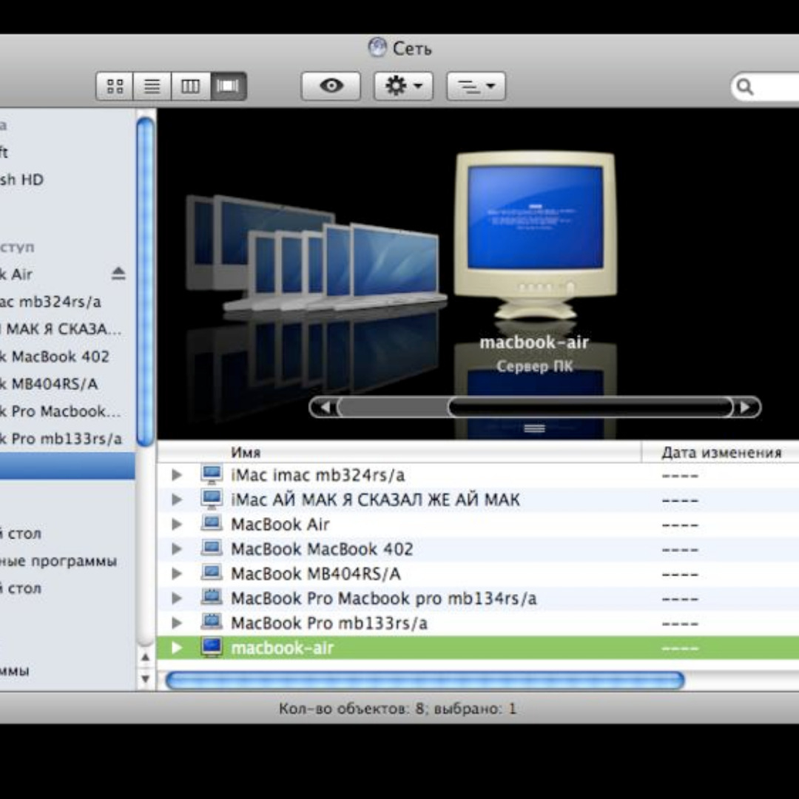
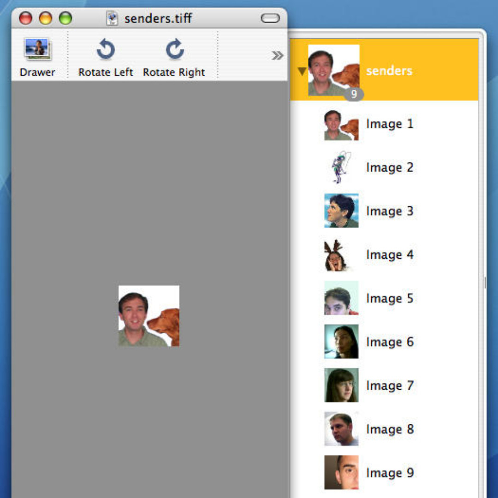

Text-Edit Easter Egg

Effetto nascosto nel Dock

Blue Screen of the Death di Windows sul Finder

E-Mail Easter Egg
Gli "easter egg" sono piccole sorprese nascoste all'interno di un software, spesso riferimenti o omaggi divertenti o curiosi. Mac OS, OS X e macOS non sono stati da meno quando si tratta di includere easter egg nel loro sviluppo.
Uno degli easter egg più noti è il "Gestore delle finanze" (Finance Manager) che si può trovare all'interno delle preferenze di Sistema. Questa opzione apparentemente normale consente di visualizzare il valore azionario di Apple, ma se si inserisce una sequenza specifica di tasti, appare un grafico con una barra che aumenta in modo esagerato, seguito da un messaggio che dice: "Non preoccuparti, si tratta solo di una barzelletta".
Un altro easter egg interessante riguarda l'utility Screenshot di macOS. Se si fa una cattura schermo dell'intero desktop con un timer impostato, il conto alla rovescia apparirà come "Anticipato per motivi di sicurezza" (Secured for your safety), dando un tocco di umorismo al processo di acquisizione dello screenshot.
In alcune versioni di Mac OS X, era possibile scorrere rapidamente la finestra di preferenze di Sistema e, facendo clic ripetutamente su un'opzione specifica, compariva una foto del team di sviluppo di Mac OS X con i nomi delle persone che vi lavoravano. Questo easter egg forniva un'intimo sguardo sulle persone che stavano dietro lo sviluppo del sistema operativo.
Alcuni easter egg erano legati anche a giochi o riferimenti culturali. Ad esempio, in alcune versioni di Mac OS X, era possibile trovare un gioco chiamato "Snake", che richiamava il classico gioco dei rettili. In altre versioni, si poteva accedere a un clone del famoso gioco "Breakout" di Atari all'interno del terminale.
Mentre gli easter egg possono essere considerati come semplici aggiunte divertenti, mostrano anche la creatività e l'attenzione ai dettagli dei team di sviluppo di Mac OS, OS X e macOS. Questi piccoli segreti nascosti offrono ai fan del sistema operativo un motivo in più per esplorare e apprezzare il lato ludico dell'esperienza di utilizzo di un Mac.